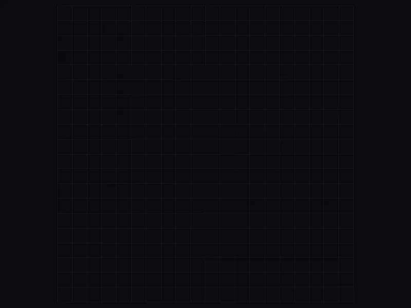

Procedural dungeon generator: seeded, validated, tested

Every run needs a new dungeon that is always fully connected, with no unreachable rooms and no doorways leading into solid rock. It also has to be reproducible: the same seed must produce an identical dungeon on any machine, so a level can be recreated, debugged and tested from its seed alone.
The generator is a pure C# pipeline in its own assembly, with no dependency on scenes or MonoBehaviours. It places rooms and connects them with a minimum spanning tree built with Kruskal's algorithm and Union-Find, which gives the cheapest set of corridors linking every room. A few extra edges add loops. The pipeline then carves rooms and corridors, including dead-end corridor alcoves, validates the result, and retries with a derived seed if validation fails. A deterministic random generator gives each stage its own independent stream, so changing one stage doesn't reshuffle the others. Graph analysis finds articulation points (chokepoints), the cells that would split the dungeon in two if blocked, so nothing that blocks movement is placed on them.
Applying graph algorithms to a real game problem, and an architecture built for testing. The generator needs no scene, so 48 EditMode unit tests cover it. Many of them sweep dozens to hundreds of seeds; for example, all 500 random seeds in one test must pass validation and produce unique layouts.
Source Assets/Scripts/Generation/Layout, tests: Assets/Tests/EditMode
In the footage
-
Room plots
A 200×200-cell board. First the hub's plot (blue), then the other rooms; the purple ones are vaults. The whole dungeon follows from the seed and the settings.
-
Spanning tree
Kruskal's algorithm joins the rooms along the shortest edges (Manhattan distance) until every room can be reached.
-
Loops and vaults
Some of the rejected edges come back as extra passages, so the dungeon has ways around instead of only dead ends. Each vault gets a single connection.
-
Rooms, corridors, doorways
Rooms are carved in the order they were placed, with irregular outlines. Corridors are dug along the links, and where they meet a room they become doorways (amber). The link graph fades out: its work is done.
-
Roles and interiors
Roles are assigned by walking the room graph: the hub, the vaults, the exit (green) and the room with the exit key. Only then come pillars, partitions and rubble, because the interior pass reads the roles.
-
Chokepoints
The dungeon's bottlenecks (red), marked for the systems that come later.
-
The same dungeon in the game
The plan fades into the game's graphics and the camera dives to the player in the hub. The footage of the next three systems plays out in another hall of this dungeon, among the pillars from "Roles and interiors".
RoomCorridorGenerator.cs · BuildOnce()
private static DungeonLayout BuildOnce(string seed, LayoutParams p, DeterministicRandom random)
{
List<Room> rooms = PlaceRooms(p, random.Derive("rooms"), out int hubIndex,
out List<int> treasurePlots);
List<RoomLink> links = ConnectRooms(rooms, treasurePlots, hubIndex, p, random.Derive("links"));
var layout = new DungeonLayout(seed, p.MapWidth, p.MapHeight, rooms, links);
CarveRooms(layout, rooms);
DetailOutlines(layout, rooms, hubIndex, p, random.Derive("outlines"));
CorridorCarver.CarveAll(layout, rooms, links, hubIndex, p, random.Derive("corridors"));
DoorwayNormalizer.Apply(layout, rooms, p.DoorwayWidth);
// Roles are assigned before the interior pass because that pass reads them: the
// start room and the hub are deliberately left legible, and it cannot know which
// they are until the graph has been walked.
AssignRoomRoles(layout, rooms, links, hubIndex, treasurePlots, p);
RoomInteriorDecorator.Decorate(layout, p, random.Derive("interiors"));
Chokepoints.Detect(layout);
return layout;
}